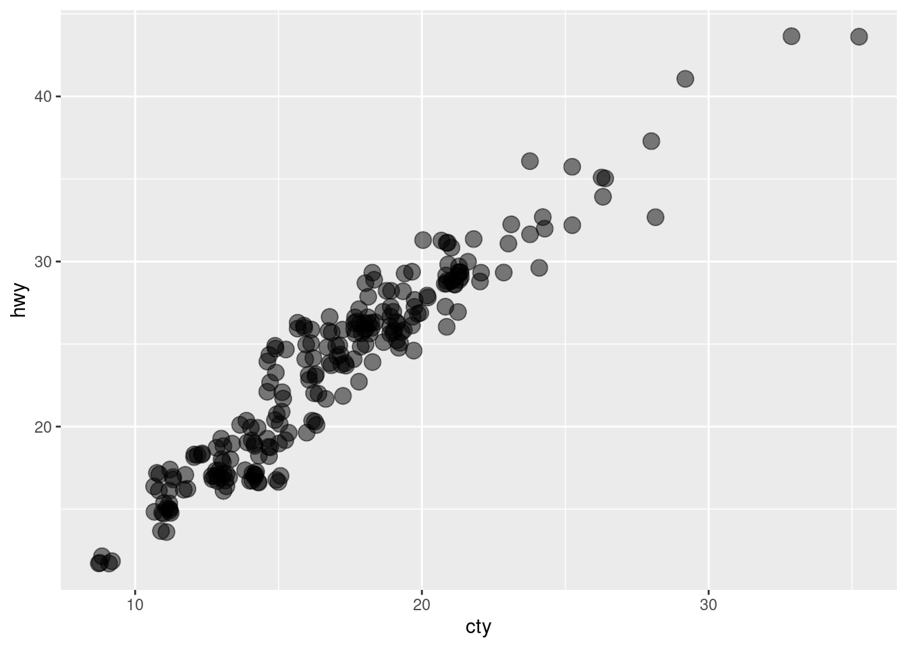

library(tidyverse)
ggplot(mpg) +
geom_jitter(aes(cty, hwy), size = 4, alpha = 0.5) 
Junho Lee
October 3, 2022
베이즈 평활화(Bayesian Smoothing)은 비모수 회귀분석(nonparametric regression)의 한 방법으로 여러 방면에서 응용되고 있는 기법이다. 앞으로 지속적인 포스팅을 통하여 베이즈 평활기법의 이론적 부분과 다양한 응용사례를 실제 데이터와 예제 코드를 통하여 소개하고자 한다.
평활화 기법의 접근방법도 전통적 빈도주의(frequentist) 입장과 베이즈주의(Bayesian) 입장으로 나누어 볼 수 있다. 이번 포스트에서는 전통적인 빈도주의 입장에서 벌점우도(penalized likelihood)의 측면에서 평활화의 개념을 설명하고, 시계열 데이터에 대한 응을 사례를 살펴보고자 한다.
전통적인 평활화 기법은 주로 시계열 관측값(종속변수)가 정규 분포를 따르는 시계열 자료라고 가정하고, 연속하는 추세값의 차이가 크게 벌어지는 경우 이에 대한 벌점을 부여하여 매끄러운 추세선을 만드는 것을 의미한다.
우리가 \(T\) 기간동안 동일한 간격으로 관측한 시계열 자료를 가지고 있다고 생각해 보자. 우리의 관심은 이 시계열 자료의 내제적인 추세를 구하고자 한다. 이 시계열에 대한 관측값을 \(y_1,\ldots, y_T\)라고 하고, 추세를 \(\mu_1,\ldots, \mu_T\)라고 하면 다음과 같이 모형을 설정할 수 있다. \[ y_t=\mu_t+\varepsilon_t,\quad t=1,\ldots, T \]
여기서 \(\varepsilon_1,\ldots,\varepsilon_T\) 를 \(E(\varepsilon_t)=0,\;\forall t\) 를 만족하는 독립인 오차항을 나타낸다.
Whittaker는 다음과 같이 벌점최소제곱 (penalised least square; PLS) 기준을 최소하는 방법으로 \(\boldsymbol\mu\) 를 추정하였다. \[ \text{PLS}(\boldsymbol \mu)=\sum_{t=1}^T (y_t-\mu_t)^2+\lambda\sum_{t=3}^T (\mu_t-2\mu_{t-1}+\mu_{t-2})^2 \] PLS를 최소화하기 위해서는 두 가지 요건을 동시에 만족해야 한다. 우선 추세 \(\mu_t\) 가 해당 시점의 관측치 \(y_t\)와 가까워야 하고, 둘째 \(t\) 시점의 추세가 \(t-1\) 시점의 추세에서 크게 벗어나지 않고 매끄러워야 한다. 추세의 매끄러움은 시계열과 추세간 차이에 대한 최소제곱에 다음과 같이 벌점항을 추가하여 고려할 수 있다. \[ \text{pen}(\boldsymbol\mu)=\sum_{t=3}^T(\mu_t-2\mu_{t-1}+\mu_{t-2})^2=\sum_{t=3}^T(\triangle^2\mu_t)^2 \] 파라미터 \(\lambda\) 는 두 가지 요건의 상충관계에서 어느쪽에 가중치를 둘 것인지를 결정한다. 여기서 오차항 \(\varepsilon_t\) 가 독립이고, 모든 \(t\) 에 대하여 동일한 분산, \(Var(\varepsilon_t)=\sigma^2\) 이라고 가정한다. 일반적으로 \(\mu_t\) 의 편차에 대한 \(d\) 차 벌점은 다음과 같이 정의한다. \[ \text{pen}(\boldsymbol\mu) = \sum_{t=d+1}^T (\triangle^d\mu_t)^2,\quad \triangle^d \mu_t=\triangle^{d-1}\mu_t-\triangle^{d-1}\mu_{t-1} \] \(d=1\) 인 경우 수평선 \(\mu_t=a\) 로부터 편차에 대하여 벌점을 부과하고, \(d=2\) 인 경우 직선 \(\mu_t=a+bt\) 로부터의 편차에 벌점을 부과한다. 일반적으로 \(d\) 차 벌점은 차수 \(d-1\) 차 다항식으로부터 편차에 대하여 벌점을 부과한다.
이제 벌점항을 행렬로 간단히 표기하는 법을 알아보자. \(\mu_1,\ldots,\mu_T\) 에 대한 1차 차분 행렬은 다음과 같이 주어진다. \[ \mathbf D_1^{(T-1)\times T}=\begin{pmatrix}-1& 1 &0& \cdots& 0\\ \vdots&-1&1&&\vdots\\0&\cdots&&-1&1\\\end{pmatrix},\qquad \mathbf D_1^{(T-1)\times T}\boldsymbol\gamma=\begin{pmatrix}\mu_2-\mu_1 \\ \cdots\\ \mu_T-\mu_{T-1}\\\end{pmatrix} \] 일반적인 고차 차분행렬은 다음 식을 이용하여 순차적으로 구할 수 있다. \[ \mathbf D_d^{(T-d)\times T}=\mathbf D_1^{(T-d)\times (T-d+1)}\mathbf D_{d-1}^{(T-d+1)\times T} \] 예를 들어 2차 차분행렬은 \(\mathbf D_1^{(T-2)\times (T-1)}\times \mathbf D_1^{(T-1)\times T}\) 로부터 \[ \mathbf D_2^{(T-2)\times T}=\begin{pmatrix}1& -2 &1& &\cdots& 0\\ &1&-2&1&\\\vdots&&\ddots&\ddots&\ddots&\vdots\\0 &&&1&-2&1\\\end{pmatrix} \] 이다. 이제 차분행렬 \(D\)로 부터 벌점행렬 \(K\) 를 구해보자. 벌점항을 다시 정리하면 \[ \text{pen}(\boldsymbol\mu)=\sum_{t=d+1}^T (\triangle^d\mu_t)^2=\boldsymbol\mu \mathbf D_d'\mathbf D_d\boldsymbol\mu=\boldsymbol\mu \mathbf K_d \boldsymbol\mu \] 여기서 \(\mathbf K_d=\mathbf D_d'\mathbf D_d\) 로 \(T\times T\) 차원의 벌점행렬을 만든다. 1차 벌점행렬과 2차 벌점행렬을 구하면 다음과 같다. \[ \small \mathbf K_1 = \begin{pmatrix}1&-1&&&\cdots&0\\-1&2&-1&&\cdots&0\\0&-1&2&-1&\cdots&0\\\vdots&&&\ddots&\ddots&\vdots\\0&0&\cdots&-1&2&-1\\ 0&0&\cdots&0&-1&1\end{pmatrix},\qquad \mathbf K_2=\begin{pmatrix}1&-2&1&&&\cdots&0\\-2&5&-4&1&&\cdots&0\\1&-4&6&-4&1&\cdots&0\\\vdots&&&\ddots&\ddots&&\vdots\\0&0&\cdots&1&-4&5&-2\\ 0&0&\cdots&&1&-2&1\end{pmatrix} \]
여기서 벌점행렬의 랭크는 \(\text{rank}(\mathbf K_d)=T-d\) 로 완전한 랭크를 갖지 않는다. 따라서, 벌점을 적용받지 않는 \(d-1\)차까지의 다항식은 \(\mathbf K_d\) 의 널공간(null space)을 형성한다. 이제 모형을 행렬과 벡터를 이용하여 다시 정의하자. \[ \text{PLS}(\boldsymbol\mu)=(\mathbf y-\boldsymbol\mu)'(\mathbf y-\boldsymbol\mu)+\lambda\boldsymbol\mu'\mathbf K\boldsymbol\mu = \mathbf y '\mathbf y -2\boldsymbol\mu'\mathbf y+\boldsymbol\mu'(\mathbf I +\lambda\mathbf K)\boldsymbol\mu \]
이제는 최소제곱기준을 극대화시키는 \(\boldsymbol\mu\)를 구해보자.
극대값을 구하기 위하여 PLS 기준을 미분하면 \[
\frac{\partial \text{PLS}(\boldsymbol\mu)}{\partial\boldsymbol\mu}=-2\mathbf y + 2(\mathbf I +\lambda \mathbf K )\boldsymbol\mu=0\quad \Rightarrow\quad \hat{\boldsymbol\mu}=(I+\lambda \mathbf K)^{-1}\mathbf y
\] PLS 추정량(estimator)은 능형회귀 (ridge shrinkage) 추정량과 동일하게 관측치 \(y\) 를 부드러운 추세 \(\mu\)의 값으로 끌어 당기는 현상이 나타난다. PLS 추정량의 기대값과 분산은 다음과 같다.
- PLS 추정량은 편의 추정량(biased)이다. 즉, \[E(\hat{\boldsymbol\mu})=E[(\mathbf I +\lambda \mathbf K)^{-1}\mathbf y)=(\mathbf I+\lambda\mathbf K)^{-1}\boldsymbol\mu.\]
- 오차항을 i.i.d.라 가정하면 분산은 \[Cov(\hat{\mathbf\mu})=(\mathbf I+\lambda\mathbf K)^{-1}Cov(\mathbf y)(\mathbf I+\lambda\mathbf K)^{-1}=\sigma^2(\mathbf I+\lambda\mathbf K)^{-1}\]
PLS 추정치는 분산을 줄임으로써 평균제곱오차(mean squared error; MSE)를 감소시킨다. \(\lambda\)의 값이 작으면 편차가 작아지지만 변동성이 크고, \(\lambda\)의 값이 크면 변동성은 적지만 편차가 커진다. 마지막으로 오차가 iid인 가우스 분포를 따른다고 하면, 즉 \(\varepsilon_t\sim N(0,\sigma^2)\) 이면 PLS 추정량의 분포는 다음과 같다. \[ \hat{\boldsymbol\mu}\sim N((\mathbf I+\lambda\mathbf K)^{-1}\mathbf y,\sigma^2(I+\lambda\mathbf K)^{-2}) \]